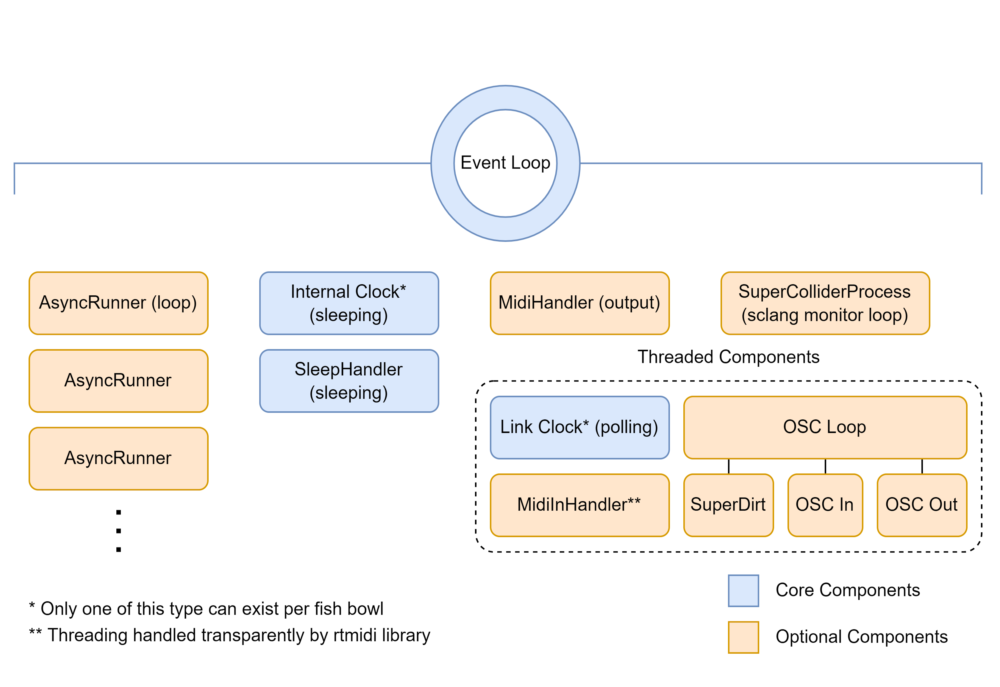

Sardine is a live coding environment and library for Python 3.10+ focusing on the modularity and extensibility of its base components (clocks, parser, handlers). Sardine has been designed to be easily integrated with existing live-coding environments as both a tool for experimentation and demonstration of various live coding techniques : temporal recursion, patterning, integration in various hardware and software setups. Although the tool is still in active early development, it has already been used in multiple public performances and algoraves. This paper is dedicated to the introduction of the Sardine system and the explanation of the main guidelines currently followed by contributors to the project. It will also present the preliminary results of our work through practical realizations that served as experimental validations during the early stages of development. Sardine already supports MIDI IN/Out, OSC IN/Out and SuperCollider/SuperDirt one-way communication through OSC.
Sardine is a live coding library based on Python 3.10+ focusing on
modularity and extensibility of its base components. Despite still being
in early alpha stage, Sardine is extensively documented on a dedicated website providing
installation guides, tutorials and media examples. Sardine is providing
three main features linked together by the FishBowl, an
environment handling synchronisation and communication between them:
a scheduling system based on asynchronous and recursive
function calls inspired by the concept of temporal recursion (Sorensen 2013).
Calls can be scheduled in musical time either on an
InternalClock or a LinkClock based on the Link
Protocol (Goltz
2018).
a small and tidy number based pattern programming language with support for basic generative and musical syntax (MIDI notes, polyphony, etc…), time-based patterns (clock and absolute time), handling of symbolic names.
a modular handlers system allowing the creation and/or removal of various I/O (OSC, MIDI) or base components.
Sardine, by design, is in the direct lineage of previously released Python based libraries such as FoxDot (Kirkbride 2016), Isobar (Jones, n.d.) or the very recent TidalVortex (McLean et al. 2022). Initially conceived as a demonstration tool, Sardine partially emulates some selected features from the previously mentioned libraries or from the dominant live-coding dialects such as the TidalCycles (McLean 2014) rhythmical mininotation or the Sonic Pi (Aaron 2016) imperative writing syntax. Sardine is designed as a general agnostic framework for approaching live coding using Python. Thus, the library is aiming to support different writing paradigms and different approaches to live performance based on the manipulation of source code. The reliance on regular Python asynchronous functions for scheduling and music writing has for consequence that Sardine is particulary suited to let each developer-musician follow its own personal coding style, ensuring a blank slate for experimentation. Furthermore, Sardine design has been strongly influenced by Andrew Mc Pherson’s and Koray Tahiroğlu concerns about the idiomatic patterns (McPherson and Tahıroğlu 2020) of usage enforced by computer music softwares, pushing users to repeat and strictly follow prefered patterns of usage.
The version hereby presented, labelled as 0.2.0, is
offering a first-look into the complete intended design for the library.
It features a near complete rewrite over the 0.1.0 version
previously used by members of the french live coding scene and by the
first global Sardine users. It features two clocks, one capable of
network synchronisation, multiple handlers for MIDI, OSC and SuperDirt
input and output, a robust asynchronous temporal
recursive scheduling system and a reimagining of the ‘Player’
system previously introduced by FoxDot(Kirkbride 2016). Sardine
originality lies in its temporal model, strongly anchored in Python’s
default mechanisms for asynchronous programming – the
asyncio library – offering a variant to other threaded
musical clocks offered by past Python based live coding libraries. It
also presents itself as an agnostic and minimal tool modular
enough to be integrated into any live-coder tooling and setup, capable
of handling very general MIDI, OSC or Python-based scheduling duties. As
such, Sardine has been already successfully integrated in various
laptop-based performance setups involving audio, video and hardware
components.
On the technical side, Sardine has been developed entirely using the Python programming language, with few libraries depending on C++ code through bindings to external libraries. Despite the known short-comings of Python for interpreted conversational real time programming (incomplete support of dynamic programming, slowness relative to other interpreted languages), we do believe that this language is suitable for the implementation of a live coding library. The large collection of available librairies and modules and the popularity of the language ensures the affordance of good tooling and rich customization and Sardine integration options into different text editors, running environments, etc… Sardine already takes advantage of a thorough ecosystem of libraries focused on data input/output, network communication and text manipulation. Moreover, thanks to its lightweight and clear syntax, Python can be read by programmers coming from different domains with a minimal adaptation time, making it a convenient platform for collaboration and experimentation over the implementation of bespoke features needed by performers.
Sardine is born out of a curiosity for the inner workings of similarly featured Python-based live-coding libraries such as FoxDot, Isobar or the very recent TidalVortex (McLean et al. 2022). At it inception, the Sardine project was thought as an attempt to provide a functional but barebones live coding library for demonstration purposes in a dissertation manuscript; a library capable enough for showing the impact of design and implementation choices on the possibilities of musical expression and on the expressiveness offered by a live coding environment. Therefore, a particular attention has been given to reproducing or at least paving the way for the reproduction of different coding styles and representation of timed musical information. Base design has quickly evolved, after the first initial tests to increase the general modularity of the system. This has been done in order to easily support and maximise the input/output options handled by Sardine, allowing to quickly integrate it with other interfaces and live coding environments.
The development of Sardine began initially in a period of collaboration and joint performances with the parisian Cookie Collective (Collective 2016) and the Digital Audio Community from Lyon (th4, ralt144MI, etc..). Stemming from the demoscene and shader-coding scene, the Cookie is known for its complex multimedia performances, each member relying on bespoke hybrid audio-visual setups, ranging from low end computing devices to complex synthesizers and circuit-bended video mixers. The need to adapt and customize the live coding interfaces already in use to the needs of each performance and each artist gave rise to the idea of creating a modular interface that could be used and mastered by all the members of the collective, while allowing for jam-ready synchronisation with other musicians and live-coders. The splitting of Foxdot’s development into several competing branches reinforced the need for a customizable and easily editable Python interface by the community. Due to the open-ended nature of the development process, Sardine has been gradually shifting towards its current modular architecture, allowing each performer to refine the nature of the inputs and outputs controllable by the system, from simple MIDI note output to more convoluted custom Sysex messages support. The invaluable help and expertise from John Phan has allowed for a complete deep rewrite of every base mechanism.
Sardine is implemented and distributed as two complementary Python
modules: sardine and fishery. They work hand
in hand in a layered and coordinated fashion. fishery
provides amendments to the default Python asynchronous REPL1 and constitutes the entry point for
the Sardine system, accessible by typing python -m fishery
right after install. fishery is nothing more but a slightly
modified version of the base Python asynchronous REPL. Importing it also
imports sardine and will de facto starting a new
playing session. The SuperCollider and SuperDirt boot
process can also be directly managed by Sardine, providing a basic but
functional API to the SuperCollider sclang interpreter. As an
helper for new users, a terminal based configuration client
(sardine-config) is also provided and can be used to setup
various options of the system before the start of a session.
Configuration files are stored in a default standard location depending
on the OS currently in use. This architecture, despite being slightly
complex for non-initiated developers, is being used to make Sardine more
accessible to novice users who may not be familiar with using the
command line and Python development tools. The modularity of the system
makes the installation of an audio-backend like SuperCollider entirely
optional, being a target more than a dependency.
Being packaged as a regular Python module, Sardine makes use of the
pyproject.toml module configuration and packaging format
defined by PEP 660. This has for advantages that no third party tool is
currently required to install Sardine other than a base
complete installation of a modern (3.10+) Python runtime.
However, one must note that the package is not, at the time of writing,
fully installable in the binary ‘wheels’ format generally
favored by Python developers and users alike. This has to do with the
problematic packaging of some C++ external dependencies used by Sardine
to process various I/O processes. Future versions will hopefully be
tighly packaged and served through the central ‘Pipy’ package
distribution system. Most users will still have to install part of the
compilation toolchain (CMake and any compatiblee C++
compiler) to be able to manually compile these dependencies for the
target system.
Thanks to the generally great IDE support for Python, Sardine is not shipping with its own text-editor. It preferably relies on third-party tools such as Atom, VSCode, Emacs, Vim or even Jupyter Notebooks. Each one of these text editors generally support the piping of code from a text buffer to an attached REPL with the installation of a simple general-purpose Python plugin. This turns the Python interpreter into a monitoring tool and message receiver used mainly to print useful informations to the user.

Sardine is making use of the asynchronous programming features
offered by Python. More specifically, Sardine takes advantage of the not
well known asyncio REPL prototype introduced by Python
3.8 (Selivanov,
n.d.). The UVLoop (Stack) 2016) drop-in replacement event loop
is also being used in order to speed up the scheduling of asynchronous
calls. Several hot-patches to the asynchronous loop have been introduced
by John Phan (thegamecracks) in order to make its behaviour
consistent on every major OS platform. Sardine is laid out as a series
of abstractions built on the asyncio event loop, making it
aware of tempo and timing. Sardine clock (either the
internal or link) clock automatically starts
whenever the system is imported but pure asynchronous calls can still be
handled even if the clock is being stopped, paused or switched.
The consistency of the asynchronous clocks is being covered by tests
(in the tests/ folder) and has been checked to be
on-par with the alternatives offered by other more widely used
threaded clocks. Development of such a feature has proven to be a
difficult technical challenge due to the specificity of the task and of
the relatively obscure inner workings of internal OS’s schedulers.
Threaded components are still used for various I/O operations
in order to lighten the load of the event loop and to alleviate the
temporal cost of message processing. Note that many Sardine
components are entirely optional and can be activated on demand by the
user. Only the clock, AsyncRunners and
SleepHandler constitute the core abstractions needed over
Python asyncio loop.

Python is known for not supporting tail-call recursion (Rossum 2009b,
2009a), making the infinite recursion of a function a delicate
task. To properly support this central feature, a complex system based
on John Phan’s AsyncRunners has been developed and is used
as the basis for every repetitive operation (such as a pattern)
scheduled with Sardine. In the spirit of the metaphor followed by the
whole program, a temporal recursive function is called by the
development team a swimming function, and is labelled in code
as an AsyncRunner. A swimming function can be
started using the @swim decorator2,
stopped using the @die decorator and can receive updates
all along its lifetime on the scheduler.
Decorating a Python function is enough to push a given synchronous or
asynchronous function to the scheduler, making it repeat every
p (for period), a time measured in beats
relative to the clock currently in use. The content of a given function
will be re-evaluated for every recursion cycle and state can be
preserved either by passing arguments to a subsequent call or by relying
on global state. Swimming functions are a powerful construct
for building abstractions dealing with time, code re-evaluation and
dynamic lifetime management of code components. For instance, iterators
can be built by incrementing a variable passed as argument.
Every other component of the Sardine system works on the assumption that its evaluation context will be the swimming function. Swimming functions can receive any arbitrary Python code and/or call the various players defined by the Sardine system to properly handle I/O operations. Thus, a complete prototype player function using the base model looks like:
@swim # swimming decorator (swim or die): pushing to the scheduler
def swimming_function(p=0.5, i=0): # p (period), i (custom iterator)
print('I am swimming in time.')
D('bd, hh, cp, hh', i=i) # call to the 'Dirt' SuperDirt interface.
... # calls and logic
again(swimming_function, p=0.5, i=i+1) # recursion callback with argument passingAbstractions can be built on top of the basic swimming function mechanism, allowing for a terser user-facing syntax. We believe that building abstraction on top of the swimming function is helpful to allow newcomers to get a grasp on the temporal model offered by the system. The FoxDot’s inspired surfboard mechanism is currently the only abstraction available demonstrating this principle. It automatically handles its own scheduling logic and also provides iterators needed by the Senders that we will detail later on:
Pa >> d('bd, hh, cp, hh', p=0.5) # Terser version of the above swimming functionEvery component of the system can talk or access the data held by any other component through the central ‘FishBowl’ mechanism. It has been implemented as a message dispatcher, allowing each component to subscribe to the environment throuh hooks.
A small patterning language has been developed for Sardine using the Lark parsing toolkit. Defined as a LALR parser, the syntax of the language is best described as a list-based calculator capable of dealing with basic MIDI note definition, custom chance operators and other composition tools.
Description of the event based system. How to define an handler, what is an hadler, etc…
Demo of the SuperDirt handler, etc…
Basic facts about the usage of Sardine in various text editing environments + how to install and handle a Sardine installation.
Zorba, Lorient, example code taken from performances.
Rémi Georges usage of Sardine: controlling legacy synthesizers along with TidalCycles, etc…
Projects involving the Magnetic Resonator Piano, Boids, etc…
Distribution and release for Python 3.11 with updated C++ dependencies whenever possible. Distribution on Pypi when it’ll be bug free, etc…
Documenting, section about the website and integration of the Sardinopedia.
Call for contributors, etc…
I warmly thank my thesis supervisors Laurent Pottier and Alain Bonardi for their support and advice in the creation of this tool. I thank the doctoral school 3LA from the University of Lyon for the funding it provided to this research. I extend my thanks to the musicians and friends who allowed me to take Sardine on stage and to present it to a wider audience these few last months: the Cookie Collective, Rémi Georges, etc…